Whether you are a global retailer, a tech company, or a financial services firm, providing near real-time embedded analytics to your external users can help optimize your operations, improve your product conversion, drive new lines of revenue, and more.
This Sigma and Snowflake lab is designed to teach you how to build customer facing analytics applications that allow your end users to dive deeper and go further with data.
Target Audience
Data Analysts, Business Analysts, or others who are doing next level analysis on their data in Sigma. No SQL is required for this lab, but the concepts do get technically complex.
Prerequisites
- A computer with a current browser. It does not matter which browser you want to use.
- A Snowflake trial account with Enterprise Edition or higher.
Once you have created your Snowflake trial environment, you will need to complete the data loading and object creation steps found in the Snowflake Tasty Bytes Quickstart, which you can access here: An Introduction to Tasty Bytes.
What You'll Learn
In this lab you'll learn how to:
- Build an interactive, embeddable dashboard with unique drill down capabilities using Snowflake and Sigma
- Explore data sets using Sigma's unique UI
- Leverage column & row-level security policies to secure data in Snowflake
- Dynamically assign Snowflake Role & Warehouse using Sigma User Attributes
- Analyze engagement across customer demographics
- See the end user experience in data products built on Sigma & Snowflake

2.1 After setting up your trial, log into Snowflake.
2.2 From the Snowflake home page click Worksheets then + button and select SQL Worksheet:

2.3 Copy and Paste the following code into your new SQL worksheet:
USE ROLE TASTY_ADMIN; USE WAREHOUSE TASTY_BI_WH; USE DATABASE FROSTBYTE_TASTY_BYTES; USE SCHEMA HARMONIZED; ALTER WAREHOUSE TASTY_BI_WH SET WAREHOUSE_SIZE = 'MEDIUM'; ALTER WAREHOUSE TASTY_DATA_APP_WH SET WAREHOUSE_SIZE = 'MEDIUM'; ---CREATE TABLE FROM VIEW--- CREATE OR REPLACE TABLE ORDERS AS SELECT * FROM ORDERS_V;
2.4 Now that the SQL is in your worksheet, execute the code by placing your cursor in each line and hitting Command + Enter. You may also execute the code by selecting the blue arrow in the top right corner of the worksheet and selecting Run All.
2.5 While the SQL executes, navigate back to the Snowflake homepage by clicking the home icon, then navigate to the Admin tab. Select Partner Connect under the Admin tab, then click to select Sigma.

2.6 You will now see a pop up explaining the objects that will be created as part of spinning up a new Sigma instance. Click the blue Connect button.
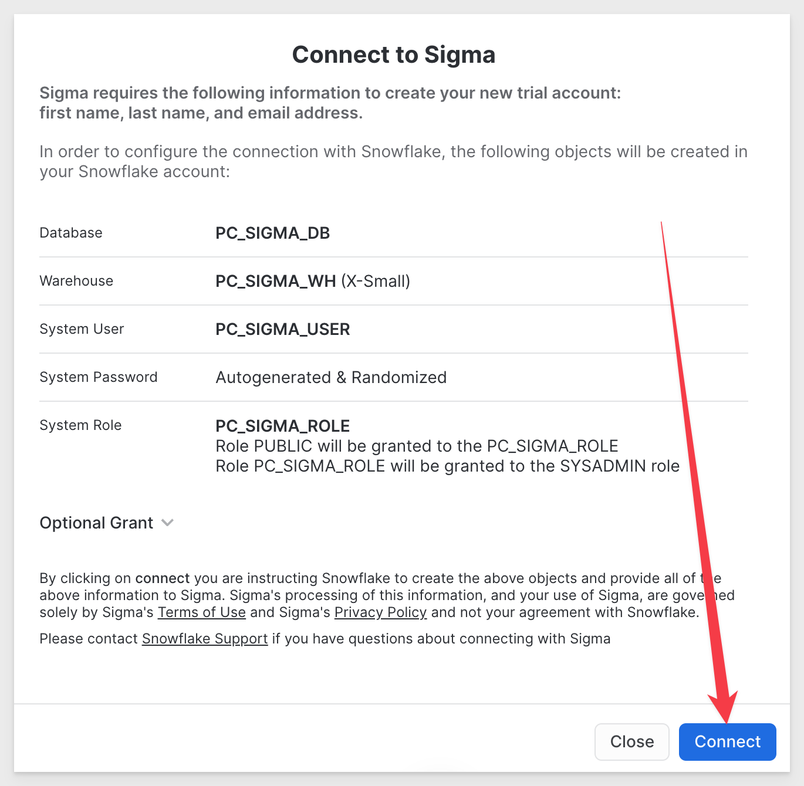
2.7 Click Activate:

2.8 You will be prompted to input a company name for your URL. You may choose whatever you feel best fits.

2.9 Then complete the steps to create a user and password for yourself.
2.10 Finally, select Get Started Using Sigma.
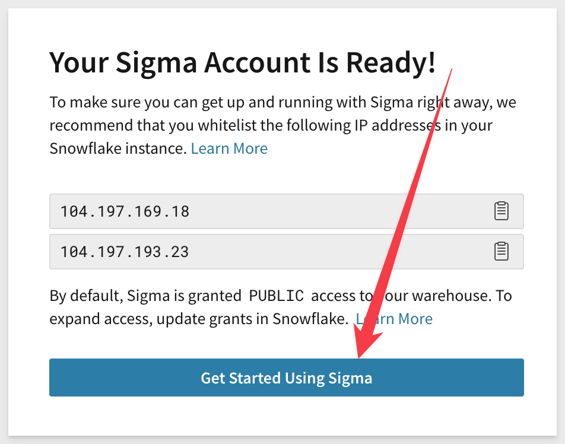
2.11 If this was done correctly, you should now see the Sigma home page. Bookmark this page for easy access later in the lab:

2.12 In the top right corner, select your name, then select Administration.

2.14 From the left-hand panel, select Connections, then click the new connection that was created for you through partner connect. It should read something like Snowflake PC_SIGMA_WH:

2.15 Select Edit in the top right on the connection page:

2.16 Adjust the connection so that the warehouse is TASTY_BI_WH, the role is TASTY_ADMIN and the User is YOUR Snowflake User name. Enter your Snowflake password and click Save. You may adjust the connection name if you so choose as well.
Upon save, Sigma will validate the connection is reachable.

2.17 Click the paper crane icon in the top left to return to the Sigma homepage:
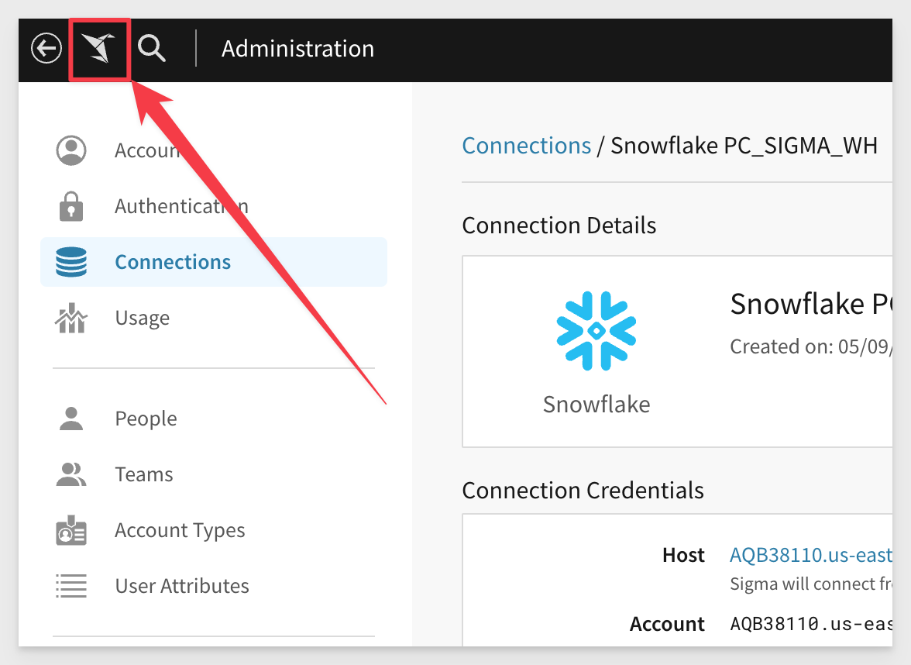
3.1 From the home page select Create New then select Workbook:

3.2 In the left-hand pane, select Add New then click Table.:

3.3 Next, select Tables and Datasets.:
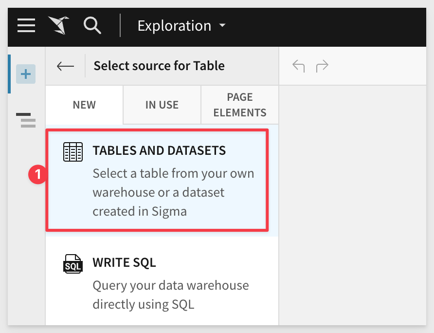
3.4 For your source, select Connections, then choose the connection we created earlier. If you did not choose to rename it, it should be labeled something like Snowflake PC_SIGMA_WH.:
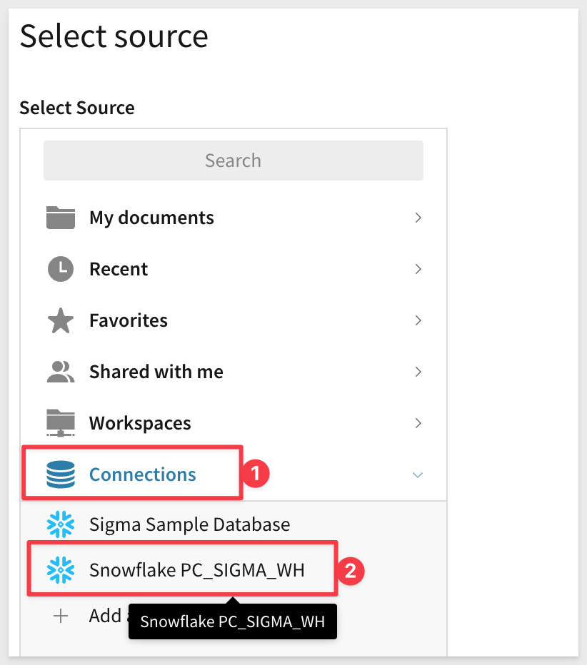
3.5 When you have found the connection, expand the FROSTBYTE_TASTY_BYTES database, and select the Orders table from the Harmonized Schema.:

3.6 You will notice that Sigma populates a preview of the table you have selected. On this interface, you have the ability to select which columns from the table you would like to bring into the workbook table. De-select Customer Id, First Name, Last Name, Email, Phone Number, Children Count, Marital Status, Order Tax Amount, and Order Discount Amount. You will not need these columns for the purpose of this lab.
Then Click Select in the bottom right corner:

3.7 Rename the table by clicking on the title Orders, and rename it to Orders Base Table:

3.8 Select the drop down arrow to the right of the Order Ts Column. Select Truncate Date, then choose Day.
This will change the formatting to show the timestamp as just the year, month, and day of the timestamp:

3.9 Double click the column name and rename Purchase Date:

3.10 Scroll through the Orders Base Table to the right until you locate the Unit Price, Price, Order Amount, and Order Total columns. Use Shift + Click to select all 4 columns, then hit the Format As Currency (or Dollar Sign) button on the top formula bar to format these columns as currency:

3.11 Now we will add another table to the Workbook Page.
Click the plus sign in the left hand pane to add a new element, and select Table. Click the tab for New then select Tables and Datasets.
This time, you are looking for the Menu table in the RAW_POS schema within the FROSTBYTE_TASTY_BYTES database. We only want the columns Menu Item ID and Cost of Goods Usd. Click Select when done.
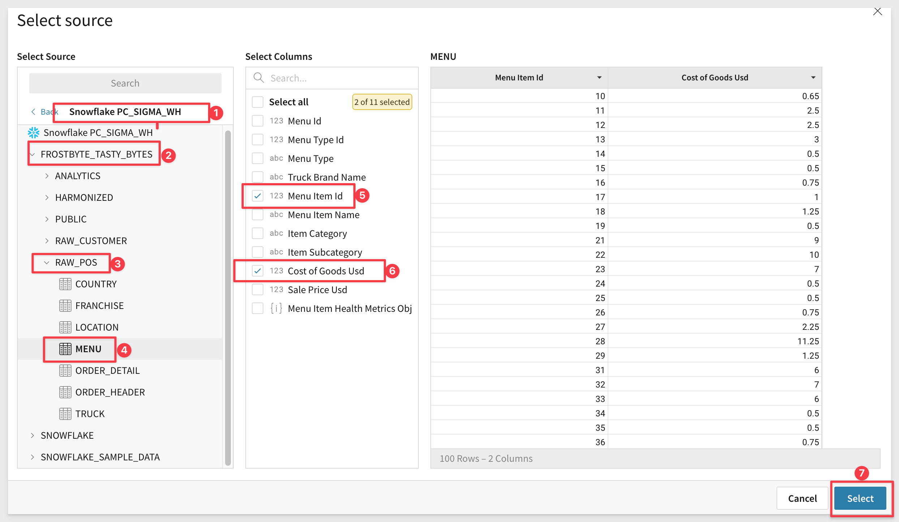
3.12 We now have two tables on the page and we want to create a relationship between them.
On your Orders Base Table, scroll all the way to the far right column Order Total, then click the drop down arrow. Select Add column via lookup.

3.13 From the drop down, select MENU as the element, and Cost of Goods Usd as the column to add. Map the elements on Menu Item Id, then click Done:

3.14 With the Cost of Goods Usd (Menu) column still selected, click the Format as Currency button once again to format the cost as a currency.
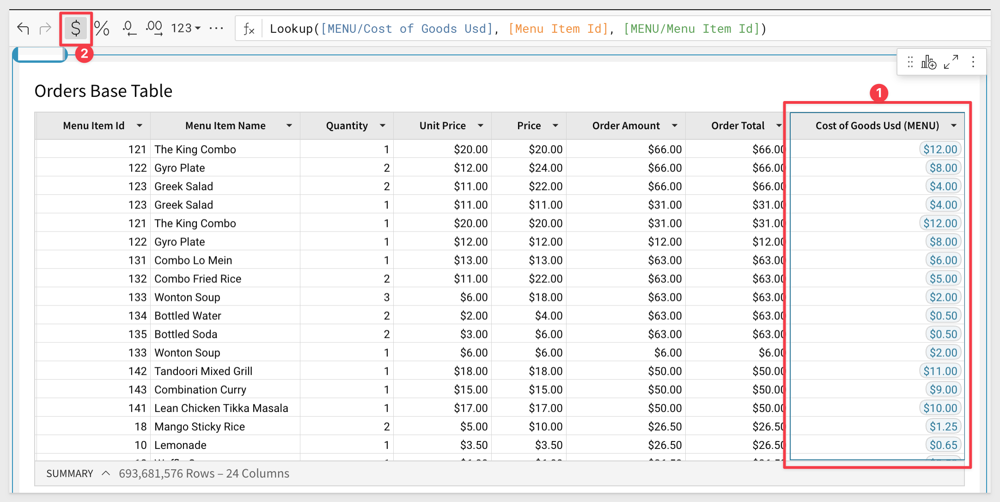
3.15 Click the arrow next to Cost of Goods Used (MENU) and select Add new column:
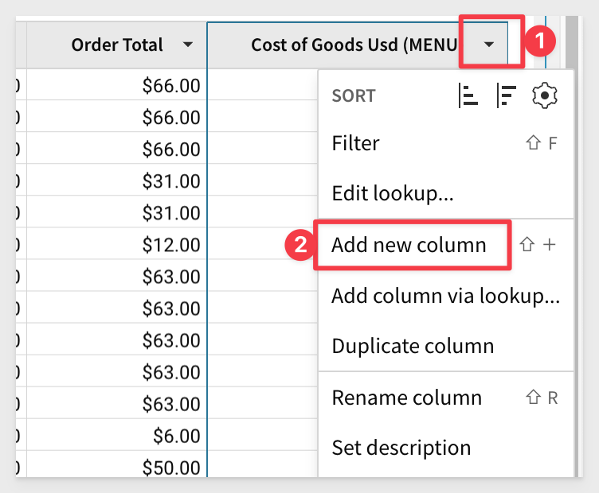
3.16 In the formula bar, type [Quantity] * [Cost of Goods Usd (MENU)] and hit enter.
This will create a new calculated column. Name this column COGS (Cost of Goods Sold)

3.17 Click the drop down by the newly created COGS column. Select Add a new Column. This time, type [Price]-[COGS] and hit Enter. Name this new column Profit:

3.18 Scroll through the Orders Base Table until you find the Truck Brand Name column. Click the arrow to open the drop down, then select Group Column:

3.19 Now that we have brought in our base elements, click the Save As button in the top right corner and save your workbook as Tasty Bytes Sales Portal:

3.20 Now, double click on Page 1 in the bottom left corner. Rename the page Data:
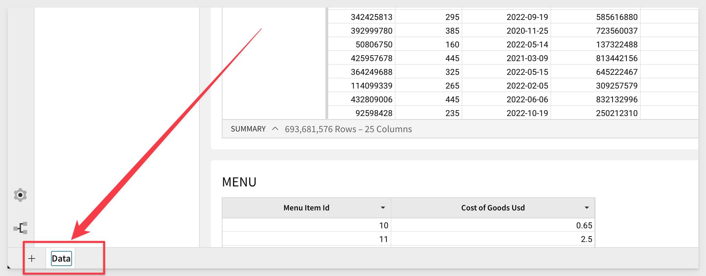
Now that we have created our base data elements and saved the first version of our workbook, we are ready to move on to building the visualizations for our sales portal.
4.1 Hover over the upper right hand corner of the Orders Base Table, then select the icon for Create Child Element and select Visualization from the drop down:
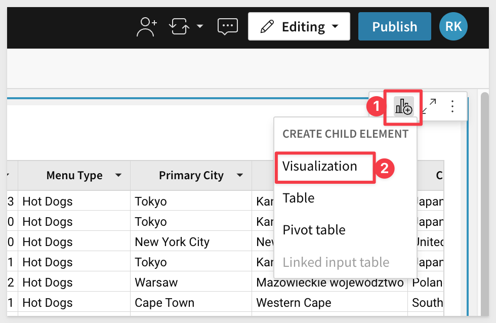
This places a empty visualization on the page.
4.2 On the left hand pane, drag Region to X-Axis, then drag Profit to the Y-Axis.
You will notice Sigma automatically performs the aggregation for profit, formatting it as Sum of Profit:
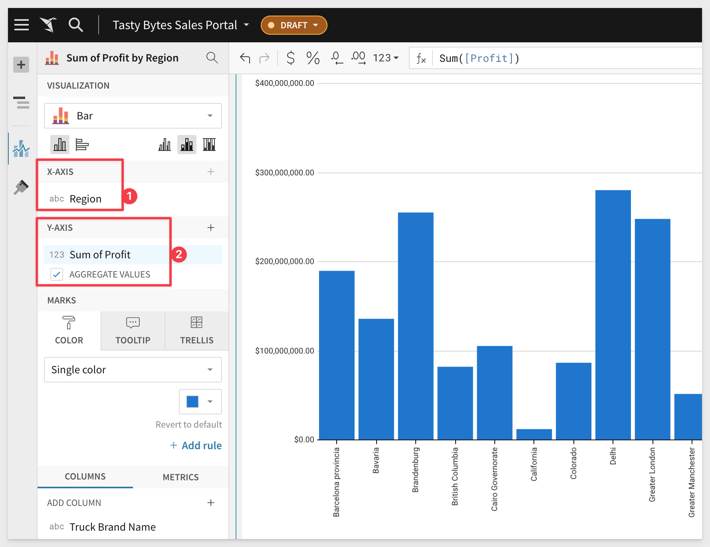
4.3 Double click the title for your new bar chart and rename it Profit by Region:

4.4 Now click the three dot icon in the top right of the new visualization. From the drop down, select Move to then New Page:

You will see your bar chart has now been moved to a separate page than the data sets.
Lets create another visualization using the same workflow.
4.5 Back on the data page, repeat the process of creating a child visualization from the Orders Base Table by hovering over the top right corner, selecting Create Child Element, then Visualization.
4.6 On the left hand menu, change the visualization type to a Line chart by selecting Line from the drop down menu where you initially see Bar.
4.7 Drag Purchase Date to the X-Axis.
4.8 Once you have placed it there, click the arrow to the right of Purchase Date, select Truncate Date, then Month.
This will group our values based on the purchase month rather than the individual purchase date.

4.9 Drag in Order Id to the Y-Axis. Select the drop down arrow and go to Set Aggregate -> CountDistinct.
This will give us the count of distinct orders over time:

4.10 Rename this visual Orders by Month.
4.11 You will notice a sharp decline in orders on the far right of the line graph. This is because our data set does not include the orders for the full month of November 2022. Right Click the furthest right data point, and select Exclude 2022-11 to remove the sharp drop off from our visualization.

4.12 Move this element to the page you placed your bar chart on earlier.
4.13 On the Orders base table, locate the Purchase Date column, and select Filter from the drop-down.

No need to set a date range right now so just click away from the calendar to make disappear.
4.14 On the new Filters & Controls pane, click the three dots to the right of the filter. Select Convert to page control from the dropdown menu.

4.15 Move this new Control element to the page with your visualizations.
4.16 One last time, return to the Orders Base Table and select Create Child Element. This time, select Pivot Table from the drop down.
4.17 Drag Truck Id to Pivot Rows, Purchase Date to Pivot Columns, and Profit and COGS to values.
4.18 Select the arrow to the right of Purchase Date, and truncate to the year.

4.19 Double click on Sum of Profit on the left hand pane and rename to Profit. Repeat the same for Sum of COGS, renaming it COGS.
4.20 Rename the pivot table Yearly Profit & Cost by Truck:
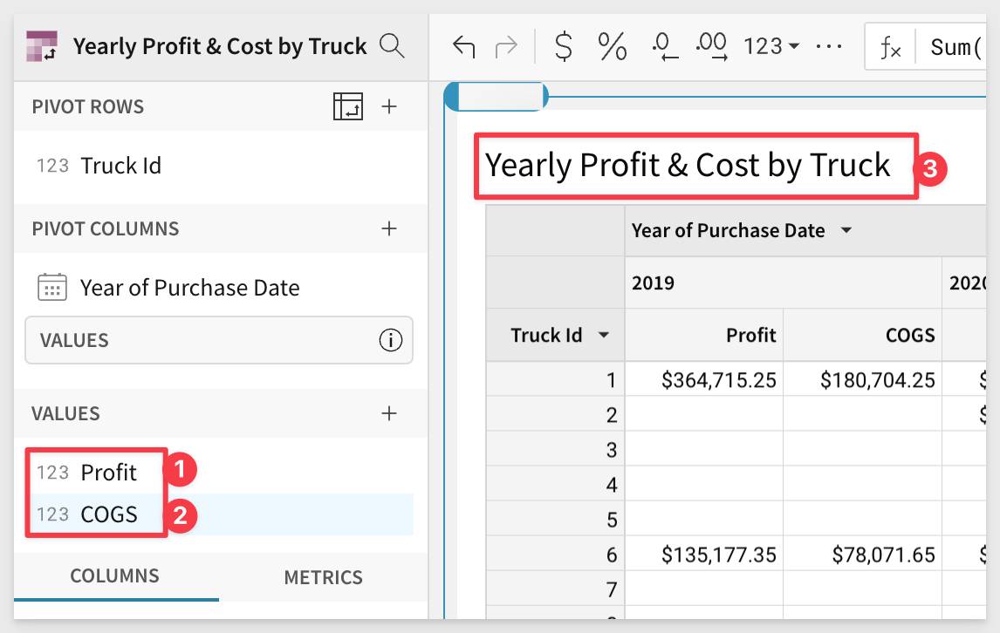
4.21 With the pivot table selected, click on the paintbrush in the left hand pane, then click Conditional Formatting:
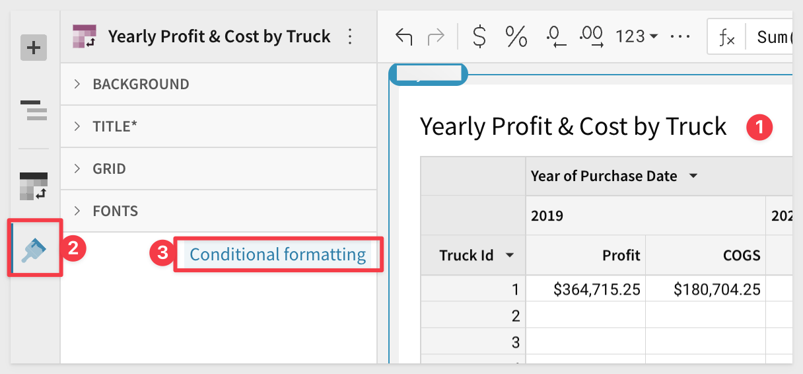
4.22 On the Apply to drop down, select Profit as the column to apply formatting to.
Then select Color Scale as the formatting type:

4.23 Finally, move the pivot table to the new page you created for your visualizations.
4.24 On the visualizations page, double click where you see Page 1 in the bottom left hand corner and rename the page to Dashboard.
4.25 Click the plus sign in the top left corner of the page for Add New. Then select Viz.
4.26 For the data source for the new visualization, select ORDERS BASE TABLE from the Workbook Elements field:

4.27 Under visualization, change the type to KPI. Then drag Truck Id to the Value field:

4.28 To the right of Sum of Truck Id, select the drop down and change the aggregate to CountDistinct:

4.29 With the KPI selected, click the decrease decimal button in the top formula bar until you see the total count of trucks with no decimal places:

4.30 Finally, double click CountDistinct of Truck Id in the left hand pane, and rename the value to Number of Trucks:
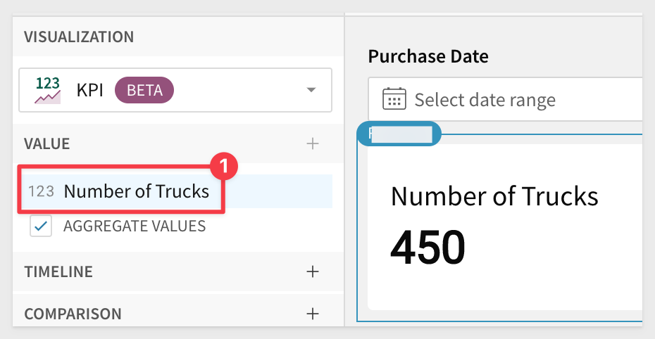
4.31 Repeat the process to create another KPI Visualization from the Orders Base Table, but this time, drag Order Id to the value. Set the aggregate to CountDistinct, decrease the decimal places, set the datatype to number (under the "123" icon) and rename the field Number of Orders.
Your KPI tile should look like this:

4.32 Drag your visualizations to rearrange them so that your KPIs are side by side at the top, your control element is below them, the bar & line charts are side by side below that, with the pivot table at the bottom so that your page looks like this:
Don't worry if you make a mistake; you can always just go back by clicking the Undo icon as shown by the red arrow:
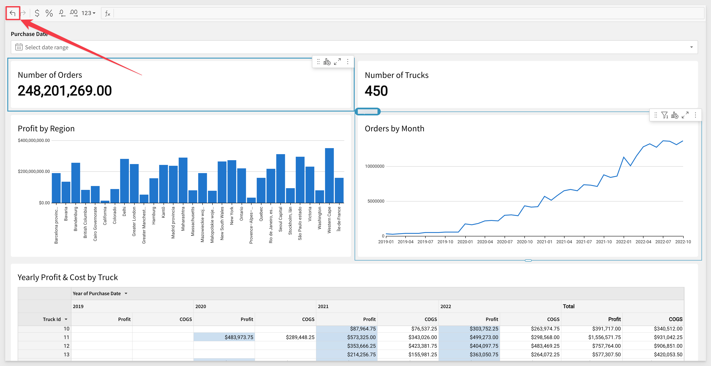
4.33 Once again select the plus sign in the left hand panel to add a new element. This time, select Text.

4.34 Drag your new text element to the top of the page.
4.35 In the text box type the = sign and a formula bar will appear. Copy and paste this formula into the formula bar:
If(CountDistinct([Orders Base Table/Truck Brand Name]) >1, "Tasty Bytes", [Orders Base Table/Truck Brand Name])
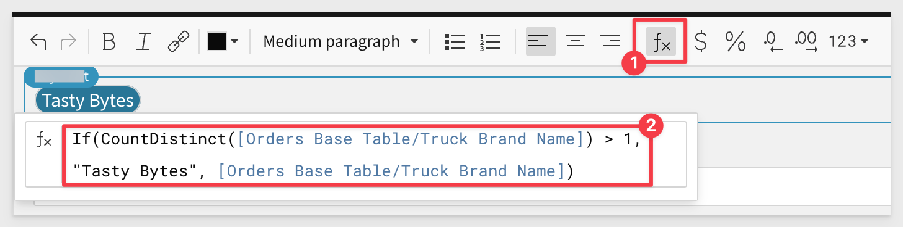
4.36 Click the green checkmark after completing the formula, then type Sales Performanceto the right of the dynamic text bubble.
4.37 Format your new text element as a Large Heading and center on the page:

4.38 Click the gear icon in the bottom corner to open the Workbook Settings menu:

4.39 Uncheck the box for Show Cards:
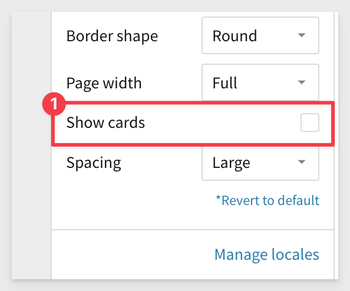
4.40 We don't want end-users to see the Data tab, so we will make that hidden for them. It will still be available to you, but not others who do not have the correct permissions to see it.
From the drop down next to the data page, click Hide:

4.41 Our work was being auto-saved as Draft as we made each change. We can now change the state of the Workbook to Published.
Click the blue Publish button in the top right corner.
Now that we have created our workbook, we need to set up the security permissions on the data set and the workbook itself.
5.1 Navigate back to your Snowflake instance and the worksheet you created earlier in this lab.
5.2 Once you have navigated back to your Snowflake worksheet, copy and paste the following SQL into your worksheet:
You will have to modify this code to set the username to your Snowflake username:

---SET DATABASE TO BE USED ---
USE ROLE TASTY_ADMIN;
USE DATABASE FROSTBYTE_TASTY_BYTES;
USE SCHEMA HARMONIZED;
---CREATE MAPPING TABLE FOR RLS POLICY ---
CREATE OR REPLACE TABLE BRANDMANAGERS (MANAGER VARCHAR, BRAND VARCHAR);
INSERT INTO BRANDMANAGERS (MANAGER, BRAND) VALUES
('KITAKATA_MANAGER' , 'Kitakata Ramen Bar'),
('AMPEDUPFRANKS_MANAGER', 'Amped Up Franks'),
('CHEEKYGREEK_MANAGER', 'Cheeky Greek'),
('FREEZINGPOINT_MANAGER', 'Freezing Point');
SELECT * FROM BRANDMANAGERS;
--- CREATE MANAGER ROLE FOR USAGE IN RLS POLICY ---
USE ROLE ACCOUNTADMIN;
CREATE ROLE KITAKATA_MANAGER;
GRANT ROLE KITAKATA_MANAGER TO ROLE TASTY_ADMIN;
GRANT ROLE KITAKATA_MANAGER TO USER <YOUR USERNAME>;
GRANT USAGE ON DATABASE FROSTBYTE_TASTY_BYTES TO ROLE KITAKATA_MANAGER;
GRANT USAGE ON ALL SCHEMAS IN DATABASE FROSTBYTE_TASTY_BYTES TO ROLE KITAKATA_MANAGER;
GRANT SELECT ON ALL TABLES IN DATABASE FROSTBYTE_TASTY_BYTES TO ROLE KITAKATA_MANAGER;
GRANT USAGE ON WAREHOUSE TASTY_BI_WH TO ROLE KITAKATA_MANAGER;
GRANT USAGE ON WAREHOUSE TASTY_DATA_APP_WH TO ROLE KITAKATA_MANAGER;
---TEST YOU CAN ACCESS BOTH ROLES---
USE ROLE KITAKATA_MANAGER;
USE ROLE TASTY_ADMIN;
--- CREATE ROW ACCESS POLICY THAT LEVERAGES THE BRANDMANAGERS MAPPING TABLE TO RESTRICT DATA ACCESS ---
USE ROLE ACCOUNTADMIN;
CREATE OR REPLACE ROW ACCESS POLICY brand_policy AS
(truck_brand_name VARCHAR) RETURNS BOOLEAN ->
'TASTY_ADMIN'= CURRENT_ROLE()
OR EXISTS (
SELECT 1 FROM BRANDMANAGERS
WHERE MANAGER = CURRENT_ROLE()
AND truck_brand_name = BRAND
)
;
--- SET POLICY ON ORDERS TABLE---
ALTER TABLE FROSTBYTE_TASTY_BYTES.HARMONIZED.ORDERS ADD ROW ACCESS POLICY brand_policy on (truck_brand_name);
---TEST IF POLICY WORKED----
USE ROLE TASTY_ADMIN;
USE WAREHOUSE TASTY_BI_WH;
SELECT * FROM FROSTBYTE_TASTY_BYTES.HARMONIZED.ORDERS LIMIT 100;
USE ROLE KITAKATA_MANAGER;
USE WAREHOUSE TASTY_BI_WH;
SELECT * FROM FROSTBYTE_TASTY_BYTES.HARMONIZED.ORDERS LIMIT 100;
5.3 Once you have run all of the SQL statements and successfully tested the Row Access Policy, you can return to your Sigma instance.
What the script is doing:
The first statement sets the database to FROSTBYTE_TASTY_BYTES.
The next two statements we will run create our BRANDMANAGERS table, and populate it with values. This table will be used as a mapping table for the creation of our row-level access policy.
The third statement simply selects from this new table to verify the values have populated as expected into the table.
The next set of statements creates a Snowflake role for our brand managers at Tasty Bytes to use, in this instance, the brand manager for Kitakata Ramen Bar. These statements additionally grant usage of the role to yourself, as well as grant usage on the Orders table that is powering our visualizations in Sigma. Finally, there are two statements that test your access to both roles. If you are unable to assume the new KITAKATA_MANAGER role, try running the grant statements again.
The next statement we will run creates our Row Access Policy. This policy is written so that when a user is in the "Tasty_Admin" role, they will be able to see all the rows of the table. However, if they are not in the Tasty_Admin role, Snowflake will evaluate which rows they should be able to see based on their current role and the values we populated in our BRANDMANAGERS mapping table.
Now that we have created our access policy, run the next statement in order to apply it to the ORDERS table, with access being determined by the value in the truck_brand_name field.
Finally, run the next group of statements which will have you assume the TASTY_ADMIN role and select against the Orders table, then do the same from the KITAKATA_MANAGER role. You should notice that when you are in the KITAKATA_MANAGER role, you only see data related to the Kitakata Ramen Bar.
For More Information on Snowflake Role-Based Access Control, please see the documentation here: Snowflake Access Control

5.4 Back on the Sigma home page, click the icon with your initials in the top right hand corner, and select Administration:

5.5 On the left hand side, select "Teams", then select Create Team. We will create two different teams here.

5.6 For the first team, give it the team name of Tasty Admins, then click Create:

5.7 Click on Teams on the left sidebar and repeat this process, creating a second team called Kitakata Managers.
5.8 Once you have created both teams, select User Attributes from the left-hand panel and click Create Attribute:
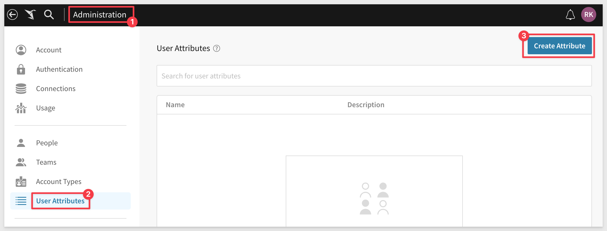
5.9 Name your attribute Tasty Role, and give it a Default Value of Public. Click Create to finish.

5.10 Next, create a second User Attribute, this time calling it Tasty Warehouse and giving it a default value of Compute_WH

5.11 Navigate back to User Attributes by clicking User Attributes on the left hand side. You should now see your Tasty Warehouse and Tasty Role attributes.

5.12 Select Tasty Role, then click Assign Attribute

5.13 From the drop down list, select the two teams you created earlier, Tasty Admins and Kitakata Managers. Assign them the role attributes of TASTY_ADMIN and KITAKATA_MANAGER respectively. Click the blue Assign button to complete:

5.14 You will notice that the teams are listed by priority. If a user is on multiple teams, they will have the permissions of whichever team is given highest priority under the user attribute. As you are the only member of both teams, ensure that Tasty Admins are in the highest priority position by dragging the team to the top.

5.15 Repeat this process for the Tasty Warehouse attribute, this time assigning your Tasty Admins team the warehouse of TASTY_BI_WH and your Kitakata Managers team the warehouse of TASTY_DATA_APP_WH. Click Assign to complete:

5.16 Once again, ensure that Tasty Admins is the highest priority team by dragging it to the number 1 slot.
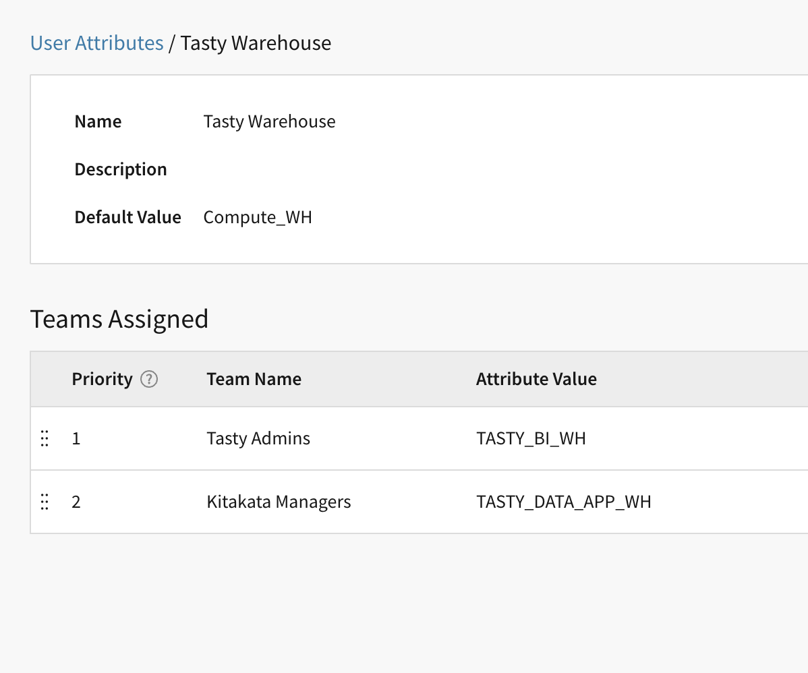
5.17 On the left hand side, navigate to the Connections tab, and select the connection you have been using throughout this lab. Click Edit next to the connection name:

5.18 In the warehouse field, click the list icon to Set by User Attributes. From the dropdown, select the Tasty Warehouse attribute you created earlier.
5.19 Do the same for the role field, selecting the Tasty Role attribute you created.
5.20 Finally, enter your Snowflake password and click Save in the top right corner:

Your Connection Details pane should now show that your warehouse and role in Snowflake will be determined by the User Attributes you have created.
5.21 On the connections tab, select your TastyBytes connection and click Browse Connection.
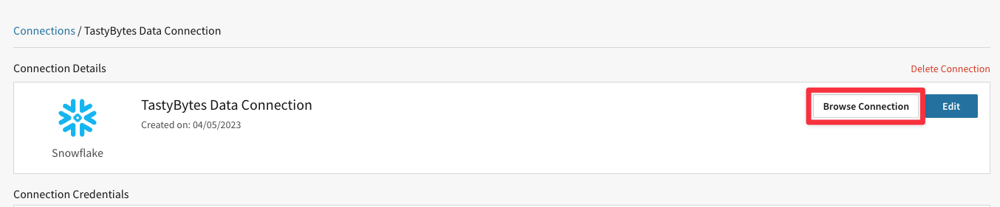
5.22 Under Permissions, click ‘Add Permission'

5.23 Select both teams you have created and grant them Can Use Permissions on the Connection. Un-check the box for Send an email notification, then click Save.


Create a Version Tag
5.24 On the left hand side, we will now select Tags. Next, click Create Tag.
5.25 Name your tag Production, give it a description (required), and select a color. Click Create:

Embedding Keys
5.26 For the last piece of work we will do in our administration UI, select the Account field from on the top left. Then scroll down to where you see Embedding. Click Add.

5.27 You will see a prompt asking if you want to enable the premium feature. Click Enable. You will not be charged for leveraging this in a trial environment.
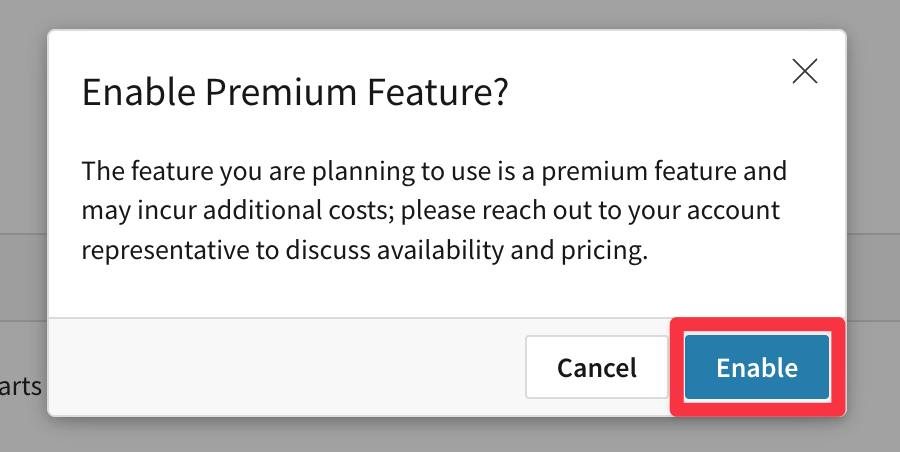
5.28 Finally, you will see your embedding secret. You may save this to another location for future labs, but it will not be needed for this lab. Click Close.

5.29 Select APIs & Embed Secrets from the lefthand menu.
5.30 Click Create New:

5.31 Select Embed Secret, and name the secret Tasty Embed.
5.32 In the Owner field, select your Sigma user, and click Create:

Normally, you would save the ClientID and Secret keys that are auto-generated and presented in a pop-up to a secure location for use later.
We do not need to do this for the purposes of this lab. The keys are required to exist as we will demonstrate embedding directly within Sigma.
5.33 Click Close.
Workspaces
We will create a Workspace and grant permission based on team membership.
5.34 Navigate back to the Sigma homepage by clicking the Paper Crane logo in the top left corner. Select Workspaces from the left hand side:

5.35 Select Create Workspace in the top right corner, then name your workspace Tasty Bytes.
You will see your user listed with Can Manage permissions.
5.36 Add the two teams you created earlier by using the search bar below your user, and grant them Can Contribute permissions.
5.37 Uncheck the Send an email notification so that we don't try to send mail at this time.
5.38 Click Save:

You will now see your new Tasty Bytes Workspace. Click on its title, then select Create Folder in the top right corner.
5.39 Name your new folder Workbooks, then click the green check mark:

5.40 Navigate back to the home page by clicking the Sigma logo in the top left corner.
5.41 From the home page, click into your Tasty Bytes Sales Portal Workbook you created earlier. I should be at the top of the RECENT list:

5.42 On the top bar, click the drop down next to the workbook title. Select Tag this published version:
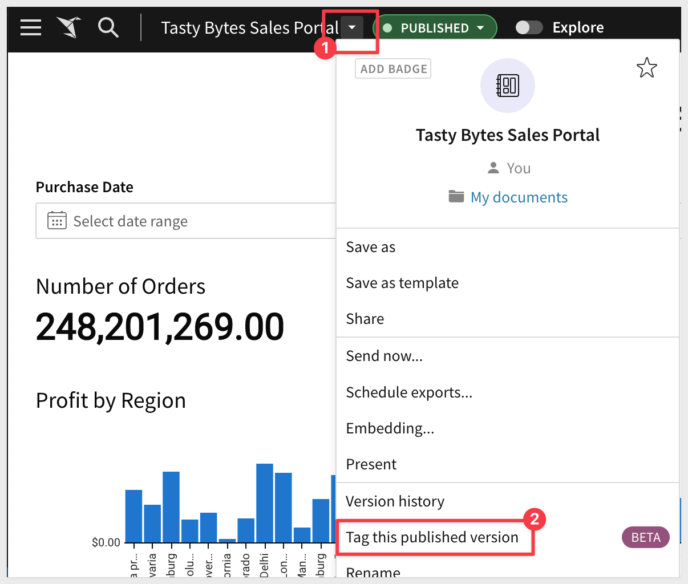
5.43 From the drop down, select the Production tag we created earlier. Check the box for Allow Saving as a New Workbook, followed by Set Tag:
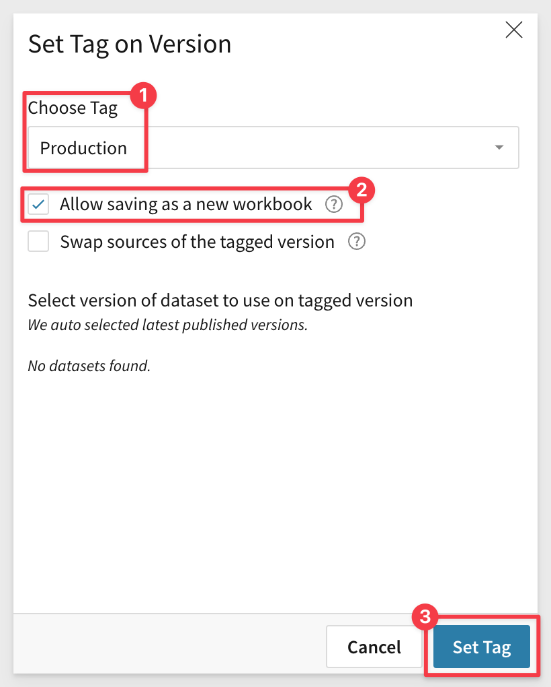
5.44 Once again, select the drop down by the workbook title, this time selecting Move:
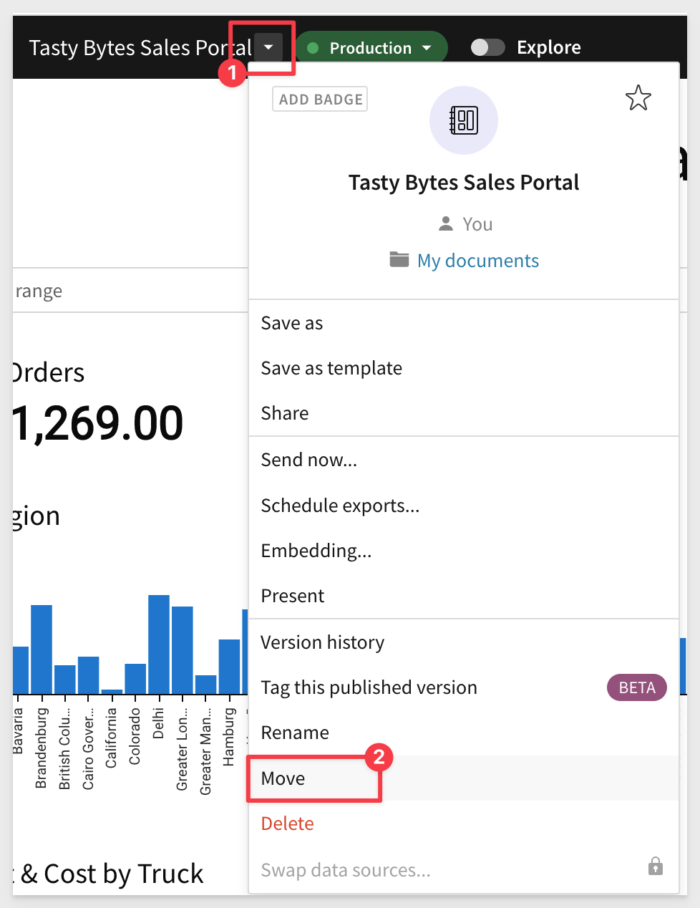
5.45 When prompted to choose a destination, select the Tasty Bytes workspace we created earlier:

5.46 Then, select the Workbooks folder we created and click Move:

Many customers want to embed Sigma content in another web application. Embedding allows that to happen. In the case of this lab, we don't have another application handy, but we can still build and test embedding directly in Sigma.
6.1 From the drop down by your workbook title select Embedding:

6.2 From the drop down labeled Generate Application Embed Path For, select "Entire Workbook". Then click "Test", which will take you to the Sigma Embedding Sandbox.
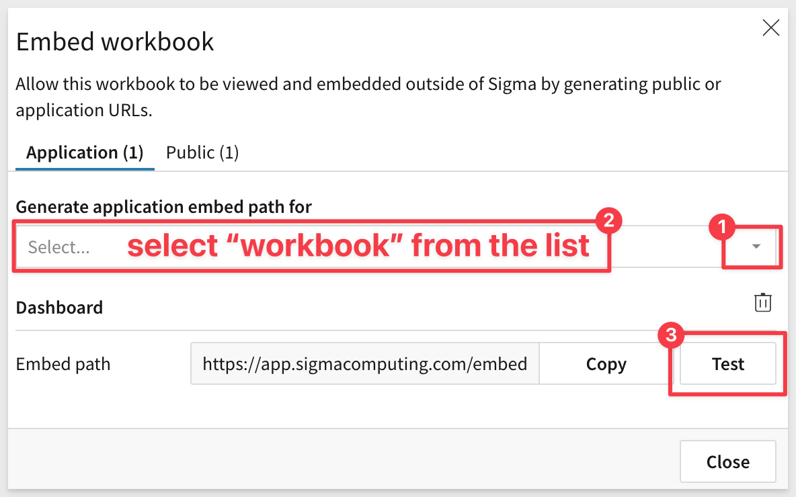
6.3 On the left hand side choose the following parameters:
- Select the embed secret we created earlier (Tasty Embed) from the Embed Secret drop down.
- For Mode, select "User-Backed"
- For Embed User Teams select "Kitakata Managers"
- For email, input any random email address that is NOT the email you log into Sigma with. It does not need to be a real email address, and you can put something like managers@tastybytes.com.
- For account type select "Creator"
6.4 Click Load Embed.
If everything worked correctly, your dashboard should now read Kitakata Ramen Bar Sales Performance.

This is because Sigma leveraged the User Attributes you set up previously, and filtered the data per the row access policy you created in Sigma. Now members of the Kitakata Managers team can only see data for the brand they manage.
6.5 Click Collapse in the top left if you want to just view the embed full page.
6.6 Hover over the pivot table and select Maximize Element in the top right corner:

You will now see the data set underlying the Pivot table.
As you can see, Sigma has created a grouped table automaically, that powers the Pivot.
Lets add additional metrics to the pivot table.
6.7 Click the arrow on the right hand side of the COGS column, and select Add new column:

6.8 In the formula bar, copy and paste this:
[Profit]/(Sum([Price]))
6.9 Then click the % button to format this as a percentage.
6.10 Double click the Calc column header and re-name the column Profit Margin:

6.11 Now click the two arrows in the top right corner to minimize the element:

You will see that the newly calculated column has been added to the Pivot Table on the main dashboard page:

6.12 Click the blue Save as button in the bottom right corner:

6.13 Save the updated workbook as Tasty Bytes Sales Portal with Profit Margin to the Workbooks folder within the Tasty Bytes workspace we created earlier.
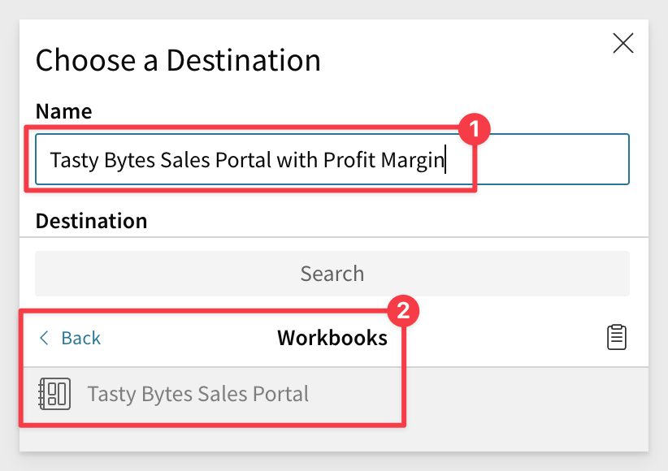
6.14 Navigate back to the Sigma homepage, and select Workspaces from the left hand menu.
6.15 Open the Workbooks folder within the Tasty Bytes workspace.
You should now see the new version of the workbook that was created by your Embed User.
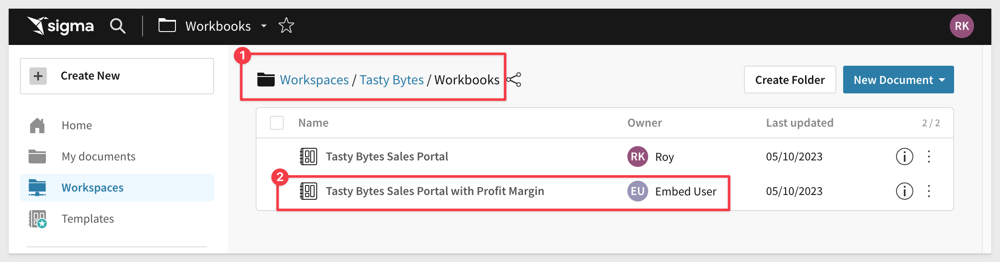
6.16 Open the workbook created by the embed user to verify that the calculations they added to the pivot table have been maintained.
6.17 Navigate back to the production workbook you created. You will notice that changes made by end users have not impacted the production tagged workbook version.
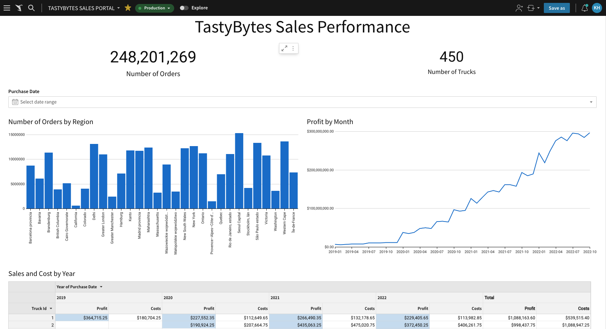
In this lab we learned how to connect Sigma to Snowflake, create interactive, embeddable dashboards in Sigma, and how to leverage Snowflake & Sigma security policies to secure multi-tenant datasets backing an application. We thank you for your participation, and hope this exercise has helped you understand the value Sigma on Snowflake can drive for your organization and your customers.
Additional Resource Links
Help Center Home
Sigma Blog
Resources and Case Studies